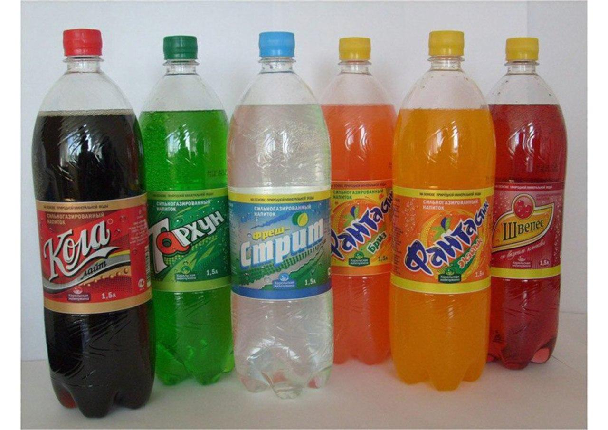

Тема: Церква де є жива віра.
Ціль: Показати аудиторії що релігія і віра це дві різні речі, церква не має містити релігіозних людей а щиро віруючих.
Вступ:
Покажіть картинки де зображені
фейкові бренди (типу Abidas, Naik, MyPhone,
MacRonalds...), дані картинки покажуть що
підробка може бути схожа на оригінал, але
якість продукції значно гірша.
Запитайте аудиторію, на що ще роблять
підробки? (гроші, дорогоцінні прикраси,
техніку), тобто підробку роблять на те що є
цінним.
І ше одне питання, для чого робити
підробку? (логічно щоб заробити гроші).
Текст:
1Ів.5:4 - "А оце перемога, що
світ перемогла, віра наша."
Релігія - це підробка на віру.
Запитайте аудиторію, в чому різниця релігії
і віри.
Проведіть паралелі між тим що сказано в
вступі та рілігією і вірою.
Релігія - це традиційність, обряди, закони,
правила, які людина повина дотримувати
(більшість думає для того, щоб спастись).
Віра - живі стосунки з Богом, керуєшся не
правилами а голосом Бога, живеш не по
закону а по благодаті.
Віра готова померати, Релігія готова
убивати.
Церква часто схожа на ігровий майданчик,
де всі спорят який має бути формат, як
правильно вірити, що робити а не робити.
Релігія - це фарисейство.
Церква де є жива віра має:
І.
Спілкування.
Дії.2:42 - І вони перебували в науці
апостольській, та в спільноті братерській, і в
ламанні хліба, та в молитвах.
ІІ.
Учнівство.
Мт.28:19 - Тож ідіть, і навчіть всі народи...
Повеління Христа для церкви полягає в
тому, щоб навчати людей біблійним
істинам і в першу чергу навчити Євангелія.
Якщо церква не навчає, то з неї не має
користі.
ІІІ.
Поклоніння.
Рм.15:6 - щоб ви однодушно, одними
устами славили Бога й Отця Господа
нашого Ісуса Христа.
Якщо церква жива, то вона буде славити
Бога завжди, незважаючи на життєві
ситуації.
Якщо в церкві немає щирого поклоніння,
то і немає любові до Бога.
ІV.
Служіння.
Дії.2:45- І вони продавали маєтки та добра,
і всім їх ділили, як кому чого треба було.
Церква як ніхто інший повинна бути
зацікавлена в соціальних допомогах.
Якщо церква не служить для ближніх, то
вона не є світлом і сілю для світу.
V.
Євангелізація.
Дії.5:42 - І щоденно у храмі й домах
безупинно навчали, і звіщали Євангелію
Ісуса Христа.
Євангелія має бути центром церкви.
Якщо церква не звіщає Євангелію, то це
не церква.
Висновок: Церква буде жива тоді, коли буде любити Христа, і робити те що Він сказав.
- 